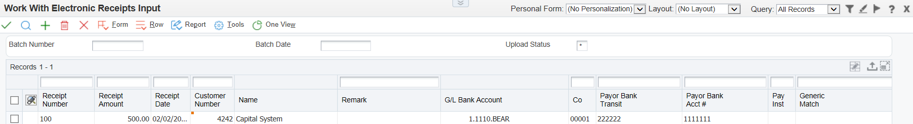

Immediate recognition of cash received is an essential part of the accounts receivable process. To ensure early cash recognition, you can process receipts automatically to quickly apply payments from customers to their invoices. This method of processing receipts enables you to:
Have Unapplied Cash reflected on the Customer's account, even if no invoices are available for application.
Store instructions for invoice matching at the customer and company level.
Define flexible selection criteria and sequencing specifications to reduce the number of invoices that are candidates to be reviewed.
Process unapplied receipts that were entered manually.
Reprocess receipts that were not successfully processed the first time.
Upload customer payment information. A custom program, EDI lockbox program, or the Text File Processor program (P007101) can be used to transfer receipt information from a customer’s bank media to the Electronic Receipts Input table (F03B13Z1) for processing.
Create receipt records automatically. A batch program, Update Receipts Header (R03B551), can be run to extract receipt information from the Electronic Receipts Input table (F03B13Z1) and creates either unapplied or logged receipt records in the Receipts Header (F03B13) and Receipts Detail (F03B14) tables.
Apply receipts to invoices automatically. A batch program, Apply Receipts to Invoices (R03B50), can be run to automatically apply the receipts to the open invoices using algorithms that were defined in a set up procedure.
Review, revise, and add electronic receipts. You can review and revise the receipts that the system was unable to process successfully so that you can reprocess them successfully later. If necessary, you can also add electronic receipts.
Purge electronic receipts. Electronic receipts can be purged from the Electronic Receipts Input table (F03B13Z1) after processing the receipts successfully. This batch process improves processing time by removing unnecessary records.
Additionally, you can manually apply receipts to invoices and run reports to review deposits and transactions.
This document discusses how to use automatic receipt processing and how to purge electronic receipt records within Oracle JD Edwards EnterpriseOne Accounts Receivable.
Scope
This document is intended for users who are setting up or using the Automatic Receipt process in the EnterpriseOne Accounts Receivable module
Details
Step 1: Upload Customer Payment Information
Before you can transfer customer payment information to the JD Edwards EnterpriseOne Accounts Receivable system, you must map bank information to the corresponding fields in the Electronic Receipts Input table (F03B13Z1) table. Automatic Receipt Set Up in EnterpriseOne Accounts Receivable (P03B50, P03B52, R03B50A, R03B50B, R03B50D, R03B50E, R03B50F) contains further information and links for mapping to this table. Once the data has been mapped, you can upload payment information received from your customer's bank using one of the following methods:
Create a custom program to upload the customer payment information from the medium used by the bank (such as a tape, diskette, or CD).
Use EDI (Electronic Data Interchange) for lockbox processing.
Use Work with Electronic Receipts Input (P03B121) to enter an auto receipt manually.
The JD Edwards EnterpriseOne Accounts Receivable Implementation Guides contains full details on EDI lockbox set up and Text File Processing. Refer to the Accounts Receivable Guide, chapter Processing Automatic Receipts.

When data is uploaded using one of the three methods above to the Electronic Receipts Input (F03B13Z1) table, it creates type '9B' batches in this table but does not create any batch header records in the Batch Control Records (F0011), unless the records are added manually. If necessary, the F03B13Z1 data can be reviewed, modified, or new records added by selecting Review Electronic Receipts (P03B121). If data is created via P03B121, 9B batch header records will also be created in the Batch Control Records (F0011) table. See also the 'Review, Revise, Reprocess' section below.
Data is uploaded to the Electronic Receipts Input (F03B13Z1) table with an upload status (EUPS) of 'blank'. The following statuses are available to help select records which require further action:
Blank - The transaction has not yet been processed
B - The transaction is eligible for reprocessing. The system assigns this code when you use the Revise Electronic Receipts Input Status program (P03B124) and turn on the option 'Set to Upload Status' after you correct receipts that previously processed with errors. See the 'Review, Revise, Reprocess' section below.
E - The transaction was processed with errors.
H - The transaction was processed by the Update Receipts Header program (R03B551) but was not matched to invoices using the Apply Receipts to Invoices program (R03B50). The system assigns this value to receipts that will be processed using the Known Invoice Match With Amount algorithm (R03B50D) or the Known Invoice Match Without Amount algorithm (R03B50E).
Y - The transaction is successfully processed and is ready to be purged.
Note: for the Apply Receipts to Invoices UBE (R03B50) to match receipts to invoices, you need to populate the Document number (DOC) with the invoice number, and not populate the Generic Match field (GMFD) with it. This is because the GMFD field can be used for many different things (statement number, shipment number, sales order number, etc), and this may not match the invoice and receipt to the correct customer.
Step 2: Update Receipts Header (R03B551)
Once the data has been uploaded to the Electronic Receipts Input table (F03B13Z1) you need to update this to the Receipts Header (F03B13) and Receipts Detail (F03B14) tables using Update Receipts Header (R03B551). This step creates Logged Receipts (RL) or Unapplied Receipts (RU) records in the Receipts Header (F03B13) and Receipts Detail (F03B14) tables from the Electronic Receipts Input table (F03B13Z1). The system creates logged receipts when it cannot locate a payor or customer. Otherwise, it creates unapplied receipts. The R03B551 can also be used to update draft records.
When you run the Update Receipts Header program, the system:
Retrieves the payment ID from the Next Numbers table (F00002)
Validates the batch type '9B' in the Electronic Receipts Input (F03B13Z1) records
Locates the payor number in this way:
If customer bank account information is provided in the Customer Bank Account (CBNK) and Customer Bank Transit (TNST) fields of Electronic Receipts Input (F03B13Z1), the system uses it to locate the address book number of the payor bank record (record type P) from the Bank Transit Master table (F0030).
If unsuccessful, and the bank information exists, the system uses the address book number of the customer bank record (record type 'C') as the payor.
**Note that if there are more than one Payor record type or Customer record type with the exact same Customer Bank Account (CBNK) and Customer Bank Transit (TNST) values, the record with the lower Address Book number value will be used to designate the payor.**
If unsuccessful, the system uses information from the document number or generic reference fields, if provided, to locate the payor number from the invoice record.
If unsuccessful, the system uses the value of the customer number field (AN8).
If unsuccessful, the system uses the address number from the corresponding Update Receipts Header (R03B551) address numberprocessing option
If the R03B551 processing option is blank, the system creates a logged receipt.
Retrieves the execution list from the customer master record (F03012). If the execution list does not exist, the system uses the execution list that is specified in the R03B551 execution list processing option or leaves the field blank.
Retrieves the G/L bank account in this way:
The system uses the value from the G/L Bank Account ID (GLBA) field.
If GLBA is blank, the system uses the values from the Home Bank Account (EHBK) and Home Bank Transit (EHTN) fields to retrieve the G/L bank account record from the F0030 table
If unsuccessful, the system uses the value from the processing option Short Bank Account ID.
If the processing option is blank, the system uses the account that is associated with the AAI item RB for the company specified.
If unsuccessful, the system returns an error message.
Retrieves the company from the Account Master table (F0901). If the company does not exist in this table, the system retrieves it from the R03B551 company processing option.
Attempts to retrieve the G/L date from the R03B551 processing options.
Formats and validates the receipt date. If the receipt date is not supplied on the electronic receipt record (F03B13Z1), the system uses the G/L date as the receipt date.
Generates an exception report of receipts that are not processed.
Updates the batch status to posted in the Batch Control Records table (F0011) for batch type '9B'. You will see batch header records only if you created receipts using the Review Electronic Receipts program (P03B121).
Creates a batch header record in the Batch Control Records (F0011) table with a batch type 'RB'.
Creates receipt header records in the Receipts Header (F03B13).
Creates corresponding receipt detail records in the Receipts Detail (F03B14).
Prerequisites
Verify that the appropriate Accounts Receivable AAIs are set up. See The Accounts Receivable Implementation Guide for your specific release. The Implementation Guides are available here.
Setting Processing Options for Update Receipts Header (R03B551)
Processing options allow the default processing for an application or UBE to be set.
Defaults Tab - These processing options specify how the system applies receipts to invoices.
G/L Date - Specify the G/L date to use if a date is not specified on the Electronic Receipts Input (F03B13Z1) record. If the system cannot locate a G/L date, it does not process the transaction.
Blank G/L Date Option - Specify the date to use as the G/L date for the receipt when a value cannot be located in the F03B13Z1 record and is not specified in the processing option for G/L date. Values are:
Blank: Use the system date.
1: Use the batch date from the Electronic Receipts Input (F03B13Z1) record.
Company - Specify the default company to use if it is not specified in the F03B13Z1 record. If left blank, the system will use the company of the Business Unit (BU) attached to the customer master record (F03012). If the system cannot locate a company number, it will not process the transaction.
Short Bank Account ID - Specify the account ID of the default G/L bank account to use if one is not specified on the F03B13Z1 record. You must specify the account ID of the bank account number, which is an eight-digit number that the system assigns to the Account Master record (F0901). An example is the account ID for 1.1110.BEAR is 00000108. If the system cannot locate a bank account, the transaction will not be processed.
Clerk ID - Specify the ID of the person to use as the clerk on the Receipts Header (F03B13) record. You can use the clerk in the data selection of the Apply Receipts to Invoices program (R03B50) to specify which receipts to process. If you leave this processing option blank, the system uses the user ID of the person who runs the program as the clerk.
Address Number - Specify the address number to use if the system cannot determine the receipt payor number. The system attempts to locate the payor from the bank account information, invoice information, or customer number that is provided on the electronic receipt. If you leave this processing option blank and the system cannot locate an address number to use, it generates a logged receipt and you must assign the payor number manually using the Standard Receipt Entry program (P03B102).
Draft Receivable Account - Specify the drafts receivable account to use when you post drafts to the general ledger. Enter the account number in the standard format (bu.obj.sub). If you leave this processing option blank, the system uses the account number that is associated with the AAI item RD1x, where x is the payment instrument on the customer record (F03012).
Draft Due Date - Specify the draft due date. If you leave this processing option blank, the system uses the receipt date as the draft due date. If the receipt date field in the F03B13Z1 table is blank, the system uses the G/L date as the receipt date and the draft due date.
Execution List - Specify the default execution list to assign to the receipt header (F03B13) if one is not specified on the customer record. If you leave this processing option blank and the customer record does not have an execution list specified, the system creates the receipt record without an execution list.
Default G/L Offset for Unapplied Receipts - Specify whether to use the value in the G/L Offset field of the customer master record (F03012) as the default value for the Unapplied G/L Offset field (GLC) on unapplied receipt records. The system locates the A/R trade account based on the G/L offset that you use. Values are:
Blank: Do not use values from the customer record.
1: Use the G/L offset from the customer record. If the customer record does not have a G/L offset defined, the system uses the default G/L offset (UC) for unapplied receipts.
Process tab - These processing options specify the types of receipts that will be uploaded and the method of creating corresponding journal entries.
Draft Upload - specify whether the system creates receipt or draft records. Values are:
Blank: The system creates receipt records.
1: The system creates draft records.
Process Marked Receipts - Specify whether to select all electronic receipts that are available for processing or only those that have an upload status of 'B'. This processing option is useful if you want to reprocess receipts that were processed previously with errors. Values are:
Blank: Process all available electronic receipts.
1: Process only electronic receipts that have an upload status of 'B'.
Journal Entry Creation Method - Specify whether the post program creates one summarized journal entry for the batch of receipts processed, or one journal entry for each receipt. The system assigns the value that you enter in this processing option to the A/R Post field (ISTR) in the Receipts Header (F03B13) table. The post program uses this value to create the journal entry records. Values are:
Blank: Summarized journal entries. The system creates one journal entry with the document type 'RK' for each batch of receipts that you post. The system assigns the receipt batch number as the document number of the journal entry. To use this method, you must also ensure that:
The offset method in the A/R Constants is set to 'B' (batch mode).
The intercompany settlement option in the General Accounting constants is not set to '2' (detail).
The batch does not contain any foreign transactions. Otherwise, the system creates journal entries in detail.
1: Detail journal entries. The system creates one journal entry with the document type 'RC' for each receipt in the batch. The system uses Next Numbers for journal entry documents (system 09) to assign the document number to the receipt journal entry. To provide an audit trail, the system updates these fields in the Receipts Detail table (F03B14) with the journal entry information:
JE document type (RZDCTG)
JE document number (RZDOCG)
JE document company (RZKCOG)
Versions Tab - These processing options specify whether to run Apply Receipts to Invoices (R03B50) automatically and the version to be used.
NOTE: Oracle recommends that the Run Apply Receipts to Invoices (R03B50) processing option below is not set to run automatically during testing and troubleshooting. If you leave this processing option blank, you must run Apply Receipts to Invoices (R03B50) manually.
Run Apply Receipts to Invoices (R03B50) - Specify whether to run the Apply Receipts to Invoices program (R03B50) automatically upon completion of this program. Values are:
Blank: Do not run Apply Receipts to Invoices (R03B50) automatically.
1: Run Apply Receipts to Invoices (R03B50) automatically.
Apply Receipts to Invoices Version - Specify the version of the Apply Receipts to Invoices program (R03B50) to use. If you leave this processing option blank, the system uses the version XJDE0001 of the Apply Receipts to Invoices Program.
Updates Tab - These processing options specify how to update certain information on the Receipts Header record (F03B13).
Bank Account Information - Specify whether to update the bank account information in the Bank Transit Master table (F0030) with information specified on the Electronic Receipts Input record (F03B13Z1). Values are:
Blank: Do not update the F0030 table.
1: Update the F0030 table.
Bank Reference Type - Specify whether to update the bank account information in the F0030 table for the customer or the payor. The system uses this processing option only if you enter '1' in the Bank Account Information processing option. Values are:
Blank: Update the payor’s Bank Transit Master record.
C: Update the customer's Bank Transit Master record.
Invoice Number Method - Specify the sequence of search methods for the system to use to locate a payor from the Customer Ledger record (F03B11) when the Payor field is blank in the F03B13Z1 table and the system cannot locate it from the F0030 table. Values are blank, 1, 2, 3, 4, 5 and 6. Six search methods are available:
Invoice Number
Sales Order Number
Customer Reference
Statement Number
Shipment Number
Receipt Matching Reference
NOTE: If you leave a search method field blank, the system excludes that search method and uses the other methods that you specify. If you leave all six fields blank, the system searches using all methods in the order listed. Before the system uses this search sequence, it uses the customer’s bank account number or the bank transit number from the F03B13Z1 table to locate a payor. The system searches for, in order:
A payor record (type P)
A customer record (type C) in the Bank Transit Master table (F0030)
If the system cannot determine a payor from the F0030 table, and a value exists in either the Document Number or Generic Match field, the system uses the search methods specified to locate the payor from the Customer Ledger (F03B11) record.
For example, if the processing options are set as follows:
Invoice Number = 1
Sales Order Number = 4
Customer Reference Number = 2
Statement Number = 3
The system matches the Document Number or Generic Match field with the invoice number first. If no match is found, the system attempts to match the Document Number or Generic Match field with the remaining priorities in the specified order until a match is found. If the system cannot locate the payor using one of the search methods, or if the Document Number or Generic Match field is blank, the system assigns the customer number from the F03B13Z1 table as the payor.
4. If the Customer field is blank, the system uses the value from processing Address Number on the Defaults tab. If this processing option is blank, the system generates a logged receipt and you must manually enter the payor.
Open Amount - Specify whether to create draft invoice records (R1) in the Customer Ledger table (F03B11) with an open amount. The setting of this processing option controls whether you can select the draft for aging. When you create a draft without an open amount, you use that record as a place holder only; you cannot select it for payment or aging. Values are:
Blank: Create draft invoice records (R1) with an open amount.
1: Create draft invoice records (R1) without an open amount.
NOTE: The system uses this processing option only when you specify '1' in the Drafts Upload processing option on the Process tab.
You may wish at this stage to post receipt batches to the General Ledger using General Ledger Post (R09801), but it is not necessary. If you have selected to call Apply Receipts to Invoices (R03B50) automatically, it will not be possible to post records created at the Update Receipts Header (R03B551) stage.
Step 3: Apply Receipts to Invoices (R03B50)
After running Update Receipts Header (R03B551) and creating unapplied receipts (or drafts), or logged receipts, in the Receipts Header (R03B13) and Receipts Detail (F03B14) tables, you must apply the receipts to invoices by running the Apply Receipts to Invoices program (R03B50). If not called automatically by the Run Apply Receipts to Invoices (R03B50) processing option in R03B551, this step needs to be run manually. This program determines the information that is necessary for the system to match a receipt to an invoice or a group of invoices based on the algorithms that are set up on the execution list and the information that is provided in the receipt records. See Automatic Receipt Set Up in EnterpriseOne Accounts Receivable (P03B50, P03B52, R03B50A, R03B50B, R03B50D, R03B50E, R03B50F) for further information on algorithms, execution lists, and their setup.
When you run Apply Receipts to Invoices (R03B50), the system:
Updates the Receipts Header (F03B13) with the execution list from the customer record, if one exists, or from the R03B50 processing options.
Updates the Receipts Header (F03B13) with the program number of the first algorithm found in the execution list.
If necessary, retrieves invoice information from the corresponding electronic receipt (Electronic Receipts Input F03B13Z1) to automatically apply the receipt to invoices for the Known Invoice Match algorithms (R03B50D and R03B50E).
Creates a new 'RB' batch if the receipt or draft records are posted; otherwise, reopens the original 'RB' batch created by Update Receipts Header (R03B551).
Creates an error report when errors exist.
Updates the Receipt Status field (ASTA) on the Receipts Header (F03B13) record with one of these values:
1: The receipt was created by running the Update Receipts Header program (R03B551).
2: The Apply Receipts to Invoices program (R03B50) was run, but the receipt was not successfully applied.
3: The receipt was successfully applied to invoices.
If the R03B50 cannot successfully apply the receipt to invoices, you can either revise information on the Electronic Receipts Input (F03B13Z1) and reprocess the receipt automatically, or manually apply the receipt to invoices using Standard Receipts Entry (P03B102).
Note: If the Apply Receipts to Invoices (R03B50) is run separately from the Update Receipts Header (R03B551), and the receipts have been posted before trying to match them, the match will occur in new batches and not in the original batch for the receipt. This functionality is similar to Standard Receipt Entry (P03B102) where a new batch is used to make adjustments to a posted receipt.
Setting Processing Options for Apply Receipts to Invoices (R03B50)
Processing options enable you to specify the default processing for programs and reports.
Defaults Tab - These processing options specify how the system applies receipts to invoices.
Execution List - specify the default execution list to use if one is not specified on the customer record or on the receipt. The system uses this hierarchy to determine which execution list to use:
If an execution list is specified on the receipt, the system uses it.
If an execution list is not specified on the receipt, the system uses the execution list that is specified on the Customer Master (F03012).
If an execution list is not specified on the customer record, the system uses the execution list that is specified in this processing option.
If the system cannot locate an execution list, it does not apply the receipt to any invoices.
Default G/L Offset for Unapplied Receipts - Specify whether to use the value in the G/L Offset field of the Customer Master (F03012) as the default value for the Unapplied G/L Offset field (GLC) on unapplied receipt records. The system locates the A/R trade account based on the G/L offset that you use. Values are:
Blank: Do not use values from the customer record.
1: Use the G/L offset from the customer record. If the customer record does not have a G/L offset defined, the system uses the default G/L offset (UC) for unapplied receipts.
Override G/L Date - Specify whether the system uses a G/L date to process automatic receipts that is different from the G/L date on the Receipts Header record (F03B13). You might want to override the G/L date if the receipt is in a fiscal period that is prior to the invoices that it pays. Values are:
Blank: Do not override the receipt G/L date.
1:Override the receipt G/L date.
G/L Date to Use for Override - Specify the G/L date for the system to use if you specified to override the G/L date in the Override G/L Date processing option. If left blank the system date is used.
Note: The "Override G/L Date" and "G/L Date to Use for Override" Processing Options under the Default tab have been added as an enhancement via Bug:12483783 in 8.9 and subsequent releases. The processing options allow users to select and apply unapplied receipts which were entered in a previous period or even a prior year by overriding the G/L Date that the receipts were created with.
Process Tab - These processing options specify whether to process drafts, receipts entered manually, and receipts that did not process previously.
Draft Processing - Specify whether the system selects draft or receipt records to process. Values are:
Blank: Select receipt records.
1: Select draft records.
Process Manual Receipts - Specify whether to process unapplied receipts that were entered manually using either the Standard Receipts Entry program (P03B102) or the Speed Receipts Entry program (P03B0001). Values are:
Blank: Process receipts that were generated by the automatic receipt application only.
1: Process all receipts regardless of how they originated. The customer master record (F03012) must be set up to process automatic receipts if you select this option.
Process Unmatched Receipts - Specify whether to process unapplied receipts that were generated because the system could not successfully apply the receipt when this program was run previously. The system updates the Auto Receipt Status field (ASTA) to '2' when the receipt cannot be applied automatically. Values are:
Blank: Do not process unapplied receipts that have an Auto Receipt status of '2'
1: Process unapplied receipts that have an Auto Receipt status of '2'.
NOTE: After you apply receipts to invoices, post the receipt batch to the General Ledger using the General Ledger Post (R09801).
Applying Receipts Generated in a Prior Period
If the G/L date of an unapplied receipt is in a period prior to the G/L date that is specified on the invoice, the Apply Receipts to Invoices program will not apply the receipt to the invoice unless you select the 'Allow PBCO Postings' option in the General Accounting Constants (P0000).
Applying Receipts to Invoices with Multiple Pay Items, Including Credit Memos
If a receipt pays an invoice with multiple pay items, you must specify the pay item on the electronic receipt record. Otherwise, the system applies the receipt to the first pay item only and might create undesired records such as chargebacks, deductions, or write-offs. Alternatively, set up the execution list to include the algorithm Known Invoice Match Without Amount(R03B50E) after the algorithm Known Invoice Match With Amount (R03B50D). The system can locate and apply the receipt to the open invoices without specifying the pay item.
Step 4: Review, Revise and Reprocess
If receipts were not applied to open invoices or did not fit the execution list settings, they can be reviewed and revised using Review Electronic Receipts (P03B121) and reprocessed again, following Steps 2-3 again. Receipts can also be manually matched to open invoices using Standard Receipts Entry (P03B102). If all receipts processed successfully, move to Step 5.
In order to review unprocessed records, Review Electronic Receipts (P03B121) can be used for reviewing, revising and adding records to the Electronic Receipts Input table (F03B13Z1) when necessary. Electronic receipts may need to be updated for the following reasons:
The information on the bank tape was insufficient for the system to create a Receipts Header record (F03B13) when the Update Receipts Header program (R03B551) was run.
A receipt record is missing due to a problem such as power failure while uploading receipt information from the bank tape.
The invoice information, which the system retrieves for the Known Invoice Match algorithms (R03B50D and R03B50E), is incorrect.
You want to update the status on records so that the purge program selects them. Example, a duplicate record exists in the Electronic Receipts Input table, or record is damaged.
You want to update the status on a batch of records that processed in error.
If you need to apply receipts manually, in Work with Customer Receipts (P03B102) you can enter a '2' on the QBE line, on the 'RS' Receipt Status (ASTA) field to find those receipts that failed during step 3 above. You can then apply these receipts to open invoices.
NOTE: When revising an electronic receipt, the batch number, batch date and the receipt number cannot be changed.
Steps to Add a Receipt Manually:
From Review Electronic Receipts (P03B121) - Work With Electronic Receipts Input screen, click 'Add'.
From the Electronic Receipt Entry screen, enter the header information. 'Remark', 'G/L Bank Account' and 'Payment Instrument' are not required fields.
In the grid enter 'transaction number' and 'receipt gross amount' as a minimum. Enter further information as required (See list below).
Click 'OK'.
Amount Expected - enter the amount of the receipt.
Transaction Number - enter a number to identify a transaction.
Receipt Gross Amount - enter the actual amount of the receipt or payment.
Cur Cod (currency code) - enter the currency code of the receipt. If left blank, the system assigns the currency code of the company that is entered in the header of the form.
Line Number - enter the line number when originating an EDI transaction. This number can represent an order line number (applicable for any order type), an invoice pay item, a journal entry line number, and so on.
Doc Typ (document type) - if you are using a 'Known Invoice Match' algorithm, enter the document type of the invoice.
Document Number - If you are using a 'Known Invoice Match' algorithm, enter the document number of the invoice.
Gross Apply Amount - If you are using Known Invoice Match with Amount (R03B50D), enter the amount of the invoice that you want to pay.
Statement Number - the system ignores any value that you enter in this field. To perform matching using the statement number, complete the Generic Matching field.
Payor Bank Transit - displays the number that is assigned to a particular bank by the US Federal Reserve to facilitate the clearing of funds.
Payor Bank Acct # (payor bank account number) - displays the number that is assigned by a bank to identify the account for a company, customer, or supplier.
If the receipt pays multiple invoices, complete the 'Receipt Gross Amount' field for the first line only. For example:
Transaction Number
Line Number
Receipt Number
Customer
Gross Amount
Doc Type
Invoice Number
Invoice Amount
123
1
456
4242
800
RI
4455
400
123
2
456
4242
RI
4456
200
123
3
456
4242
RI
4457
100
123
4
456
4242
RI
4458
100
Result: When a receipt is processed, the system creates one Receipt Header (F03B13) record for 800.
NOTE:
As of JD Edwards EnterpriseOne release 9.2, a new enhancement was added to allow zero or negative value receipts to be included in the automatic receipts process in order to resolve the following issues:
To clear a credit memo with a negative value receipt.
To match a negative or zero value receipt to several invoices and credit memos that add up to a negative or zero amount.
To clear a zero dollar invoice with a zero value receipt.
Note: The system does not allow negative value receipts with an unapplied amount.
If you have already processed a receipt unsuccessfully (the system created an unapplied receipt record, but could not perform invoice matching), and you want to revise the electronic record to reprocess the receipt, you must first:
Delete the unapplied receipt records using Standard Receipts Entry (P03B102).
Modify the electronic receipt records in Review Electronic Receipts (P03B121).
Change the Upload Status field to blank or 'B'.
Overriding the Customer Number
If you enter a customer number that is different from the payor number that the system retrieves from the bank account information that you provide, and you have specified invoice information (either using the invoice document number or the Generic Matching field ), the system assigns the payor number, not the customer number, to the receipt records that are generated. If you do not specify invoice information, the system assigns the customer number, not the payor number.
Deleting Electronic Receipts
If you delete an electronic receipt record, the system does not delete all records for that receipt number. Therefore, if you delete one record, you might need to revise information in other records for the system to perform receipt matching. For example, if receipt 444 pays two invoices, the system displays two records on the Work With Electronic Receipts Input form (P03B121). Because you enter the receipt amount on the first record only, if you delete that record, you must revise the second record to include the receipt amount.
After adding or revising electronic receipts, you must process them so that the system can create the appropriate records in the appropriate tables. The Review Electronic Receipts (P03B121) provides form exits that you can use to run the appropriate program directly from the application. These include 'Update Receipts Header' - which links to Update Receipts Header (R03B551), 'Apply Receipt' - links to Apply Receipts to Invoices (R03B50), and 'Purge Receipt' - links to Purge Electronic Receipts (R03B0041A).
Changing the Upload Status of a Batch
From Review Electronic Receipts - Work With Electronic Receipts Input (P03B121), select the receipt record and take the Form Exit 'Revise Input Status'. This takes you to the Revise Electronic Receipts Input Status form (P03B124).
Complete the Batch Number and Batch Date fields, and click 'Find'. The system displays only batches with records that have an upload status of blank (unprocessed), E (error), Y (successfully uploaded), and H (successfully processed by R03B551, but not successfully processsed by R03B50).
Select the batch containing the records for which you want to change the upload status, select either the 'Set to Upload Status' option or the 'Set to Purge Status' option, and then click 'Select'. The system marks the batch with a check mark to indicate that the batch is selected. To deselect the batch, click 'Select' again.
Click 'Close'
On Report Output Destination, select the appropriate option and click 'OK'. The system generates an exception report 'Update Electronic Receipt Status' (R03B554), listing the records that were not updated. If the report is blank, all records in the batch were updated to the desired upload status.
Applying Electronic Receipts to Invoices Manually
If the system could not apply the receipt record automatically using the Apply Receipts to Invoices (R03B50) program, you can use Standard Receipts Entry (P03B102) to manually apply the receipt to invoices. When the system cannot apply the receipt successfully, it updates the Receipt Status field (ASTA) on the receipt record to '2'. To locate these receipts only, enter '2' in the Receipt Status 'RS' field in the Query by Example (QBE) row of the Work with Customer Receipts Inquiry (P03B102) form, and then click 'Find'. Then follow the steps to apply the unapplied receipt to invoices. (See Manual Receipt Processing in EnterpriseOne Accounts Receivable (P03B102) (P03B0001) for further information on this).
Please note that the unsuccessfully matched automatic receipts need to be posted first, before you can use Standard Receipts (P03B102) to manually match them to open invoices.
Report Options
To review receipts you can print the Receipts Journal Report (R03B311). This report prints information form the Receipts Header (F03B13) and Receipts Detail (F03B14) tables. The system prints a list of the receipts entered for each bank account and the invoices that each receipt paid, if any.
To review a list of all processed items, you can print the Receipts Activity Register (R03B560). This report provides a review of the unapplied and applied receipt records in the Receipts Header (F03B13) and Receipts Detail (F03B14) tables.
Step 5: Purge Electronic Receipts (R03B0041A)
The electronic receipts from the Electronic Receipts Input table (F03B13Z1) can be purged after processing the receipts. This batch process improves automatic receipt processing time by removing any unnecessary records, and helps to conserve system disk space. Purging electronic receipts removes records from the F03B13Z1 table only.
NOTE: Verify that the R03B0041A processing options are set to only purge receipts that have been successfully processed. Receipts that have been successfully processed have a 'Y' in the Upload Status field (RUEUPS) of Electronic Receipts Input (F03B13Z1). Otherwise, the system might purge receipts before they have been matched to invoices.
Setting the processing options for Purge Electronic Receipts (R03B0041A)
Default Tab - This processing option specifies whether the system purges records only when the value of the Upload Status field (EUPS) is 'Y'.
Purge Records - Specify whether to purge records in the Electronic Receipts Input (F03B13Z1) table based on the data selection that you enter, regardless of the upload status. Values are:
Blank: Purge the records that are specified by the data selection only when the value of the Upload Status field (EUPS) is 'Y'.
1: Purge the records that are specified by the data selection regardless of the value in the Upload Status field.
After the system completes the purge process, you might want to defragment the affected tables and rebuild the table indices. Contact the database administrator for more information about this process.
Tip 2: Ensure all Accounts Receivable Automatic Accounting Instructions (AAIs) are set up correctly, including reason codes for chargebacks or deductions.
Tip 3: Review each processing option for all versions of the different programs involved.
Tip 4: If using the STANDARD execution list that uses all five algorithms and no invoices get paid, try creating a new execution list with only one algorithm in it using the standard ZJDE0001 version. If this works, add another one and so on.
Tip 5: If invoices were applied incorrectly, run a query over the Receipts Details (F03B14) table to see what algorithm value was used on the invoices. This information helps troubleshoot if the program applied the receipt incorrectly or if initial set up was the cause of the issue.
Tip 6: If the GL Date of an unapplied receipt is in a prior period to the GL Date specified on the invoice, the Apply Receipts to Invoices (R03B50) program does not apply the receipt to the invoice unless the Allow PBCO Postings option is turned on in the General Accounting Constants.
Tip 7: If a receipt pays an invoice with multiple pay items, the pay item must be specified on the electronic receipt record. Otherwise, the system applies the receipt to the first pay item only and might create undesired records such as chargebacks, deductions or write-offs.
Alternatively, set up the execution list to include the algorithm Known Invoice Match Without Amount (R03B50E) after the algorithm Known Invoice Match With Amount (R03B50D). The system can locate and apply the receipt to the open invoices without specifying the pay item.
Tip 8: If you enter a customer number that is different from the payor number that the system retrieves from the bank account information that you provide, and you have specified invoice information (either using the invoice document number or the Generic Matching field), the system assigns the payor number, not the customer number, to the receipt records generated.
If you do not specify invoice information, the system assigns the customer number, not the payor number.
Tip 9: If an electronic receipt record is deleted, the system does not delete all records for that receipt number. Therefore, additional information may need to be revised in other records for the system to perform receipt matching.